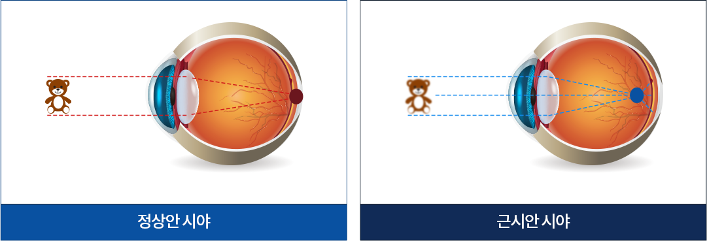

아트로핀
성장기 어린이의 눈관리는
평생 시력에 매우 중요합니다
근시 진행 억제 클리닉
평생의 시력을 좌우하는 성장기 눈관리
안정성이 높은 근시 억제 안약을 통한
성장기 아이들의 시력을 지키는것이 중요
아트로핀은 부교감 신경 억제제의 한 종류로서 강력한 수정체 조절
마비용 약물입니다.
성장기 아이들의 근시 예방과 진행 속도를 늦추는
효과와 안정성이 입증되어 많은 대학병원에서도 근시 치료로 사용하고
있습니다.
소아근시란?
근시안은 안구의 길이가 정상보다 길거나 각막이나 수정체의 굴절력이 강해
상이 망막보다 앞에 맺혀
굴절 이상이 생기는 것을 말하며 가까운 거리는 잘 보이며 먼 곳은 잘 안보이는 안구질환입니다.

소아 근시는
보통 5 세 ~15세 사이에 진행되는 경우가
많으며 특히
성장이 빠른 8세 ~10세 전 후로 진행 속도가
더욱 빨라지기
때문에
이 시기에는 적절한 치료를 받아 근시를 늦추는 것이 중요합니다.
소아근시 유병률
낮은 연령일수록 근시 유병률이 많아지며
성장기에
근시 관리를 통해 교정하는 것이 중요합니다.
신체가 성장하면 안구의 길이도 자연스럽게 늘어나게 되는데,
이때 근시가 발생하게 됩니다. 근시가 있는 어린이들은 대부분
미취학 시기부터 근시가 시작되며,
학령기 초중반까지 매년 빠르게
진행되기 때문에
어린 나이부터 관리를 하는 것이 중요합니다.
한국 식약처 품목허가 승인,아트로핀
아트로핀은 근시 진행 상태에 따라 농도가 다르기 때문에 반드시
안과전문의의 처방에 따라야합니다.
아트로핀 안정성과
효과 입증
아트로핀 안약 사용 후
근시 진행속도 50% 지연 효과
point 01
공막 성장들을 억제하여
성장기 아이들의 근시 진행 지연
point 02
근시와 시력저하에 영향을 끼치는
모양체근에 작용 효과
최근 여러 해외학술에서 저농도 아트로핀을 점안하는 것이 가장 효과적인
근시 진행 억제 방법으로 보고 되며,
40 ~ 70% 농도비례적 근시 억제 진행 효과가 있다고 연구 결과가
발표되었습니다.
아트로핀점안제의 주의사항
1아트로핀 점안제를 충분히 흡수 시키기
눈 경로를 통한 전심 흡수를 감소시키기 위해서 아트로핀 점안제를
점안 후 비루관(코눈물관)을 약 20~30초동안 눌러야 합니다.
2높은 온도의 환경과 아이의 체온이 높다면 주의하기
높은 온도의 환경에 노출될 수 있거나 38도 이상의 열이 있는
어린이에게 특히 주의하여 사용하여야 합니다.
아트로핀 점안제의 부작용
국내 임상 결과에 따르면 0.125% 아트로핀 점안은 눈부심, 알러지와 같은
부작용이2 ~ 5 %로 경미하게 나타났으며,
안과전문의사와 함께 잘 관리 할 수 있는수준으로 약 한달 후에는
아이들이 적응 가능합니다.
동공확장
아트로핀 점안제는 동공을 다소 확장시킬 수 있음
눈부심
안구내로 투과되는 빛의 양이 증가하여 눈부심을 일으킴
근거리 시력저하
부분적인 조절마비 효과로 일부에서 근거리시력 저하 발생함
이러한 불편함과
부작용은 사용 한달 후 적응이 가능하며
안약 점안을 중단하면 증상이 바로 사라지게됩니다.

소아 안과검진은 체계적인 에스안과
에스안과 소아안과 클리닉은
아이들의 연령에 따른 체계적인 검사를 통해
정확한 치료를 진행하고 있으며
전문 검진 장비를 보유함으로써 보다 체계적으로 안과검사를 진행하고 있습니다.
안전을
최우선으로
여기는 병원
아이를 위한
평생관리 시스템
최신 지식과
최첨단 장비
체계적인 수술
진료 시스템
에스안과는 아이의 미래를 위해
항상 최고의것을
추구할 것을 약속합니다.